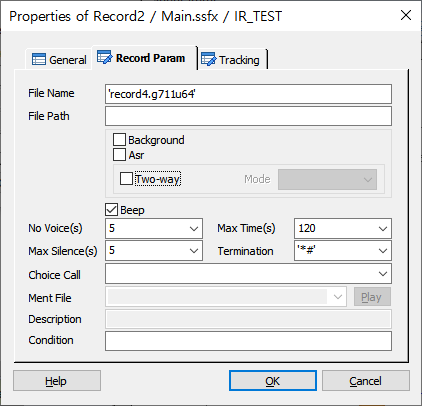
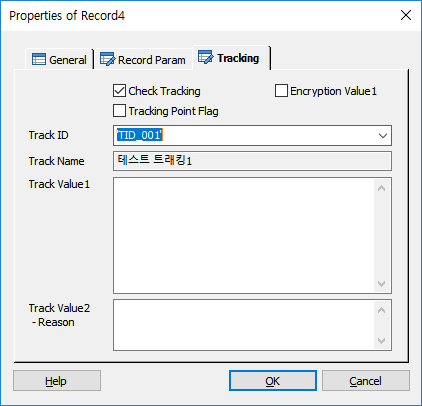

음성을 녹음 합니다.
ICON
PROPERTIES
 Record Param
Record Param

File Name : 녹음할 파일명을 지정 합니다. 파일명의 확장자는 녹음 파일의 타입이 됩니다.
- 지원 파일 -
| 파일 확장자 | 코덱 | 알고리즘 | 샘플 레이트(kHz) | 샘플 비트 수(bit) | 비트 레이트(kbps) | 비고 |
|---|---|---|---|---|---|---|
wav |
Windows PCM |
|||||
oki24 |
vox codec | |||||
oki32 |
vox codec | |||||
g711a64 |
G.711 |
PCM |
8 |
8 |
64 |
PCM A-law PSTN 통화 품질 |
g711u64 |
G.711 |
PCM |
8 |
8 |
64 |
PCM U-law PSTN 통화 품질 |
g726 |
G.726 |
ADPCM |
8 |
13 |
16, 24, 32, 40 |
ADPCM Band Width 크면 품질 좋음 |
g722 |
G.722 |
SB-ADPCM |
16 |
14 |
64 |
Sub-Band ADPCM (comprises 48, 56 or 64 kbit/s audio and 16, 8 or 0 kbit/s auxiliary data) 멀티미디어 음성회의 AM 방송 품질 |
g723 |
G.723 |
ADPCM |
8 |
13 |
24, 40 |
DCME, ADPCM MS 넷미팅의 기본 코덱 |
g729 |
G.729 |
CS-ACELP |
8 |
13 |
8 |
대부분 VoIP 프로그램에 사용(G.729a 호환) |
amr |
AMR |
ACELP |
8 |
4.75, 5.15, 5.90, 6.70, 7.40, 7.95, 10.20, 12.20 |
Adaptive Multi-Rate Narrow-Band |
|
amrw |
AMR |
ACELP |
16 |
6.60, 8.85, 12.65, 14.25, 15.85, 18.25, 19.85, 23.05, 23.85 |
Adaptive Multi-Rate Wide-Band GSM (이동 통신용 글로벌 시스템, 2G) 및 UMTS (범용 이동 통신 시스템, 3G) 기술에 사용하기에 최적 |
|
g711a(기본) |
G.711 |
PCM |
8 |
8 |
64 |
PCM A-law PSTN 통화 품질 |
kbps == kbit/s
File Path : 녹음할 경로를 지정 합니다.(지정 하지 않으면 멘트 파일 폴더에 녹음 파일이 저장 됩니다.)
Background Check Box : 녹음 시 백그라운드로 녹음 합니다.(백그라운드 녹음 시에는 Max Time만 적용됨)
Asr Check Box : 음성인식을 하기 위한 녹음을 합니다.(음성인식 아이템은 녹음을 음성인식 서버에서 처리)
Two-way Check Box : 양방향 녹음을 합니다.(IVR Outbound Ment와 고객 입력 음성멘트 녹음, 출금동의 녹취에 활용)
Mode Combo Box : 녹음 모드(Mono, Sterero)
Beep Check Box : 녹음 시작시 녹음 시작 알림음인 "삐~"음의 Play 여부를 설정 합니다.
No Voice(s) : 녹음 중 음성 검출이 되지 않는 타임아웃 시간을 설정 합니다.
Max Time(s) : 최대 녹음 시간을 지정 합니다.
Max Silence(s) : 녹음중 최대 묵음 시간을 지정하여 종료 할 수 있도록 합니다.
Termination : 녹음 도중 종료하기 위한 DTMF 를 지정 합니다.
Choice Call : Multi Call 에서 콜을 선택 합니다.(2개 콜 까지 가능, GetChannel 로 생성)
Ment File : 음성인식을 위한 녹음 시 사용 할 멘트를 설정 합니다.
Condition : 녹음 기능을 실행 하기 위한 조건을 지정 합니다.
 Tracking
Tracking

트래킹을 처리합니다.
Check Tracking Check Box : Tracking을 사용 할 것인지를 체크합니다.
Tracking Point Flag Check Box : 특별한 Tracking Flag를 설정하여 SWAT에서 트래킹 시에 이 플래그가 설정된 항목만 트래킹 할 수 있습니다.
Encryption Value1 Check Box : Track Value1 속성 데이터에 대해서 암호화 처리를 합니다.
Track ID : 정의한 Track ID를 선택합니다.
- DefineTrack Item에 정의된 Track ID가 콤보박스 리스트로 제공됩니다.(Type이 없거나, Record인 경우)
Track Name : Track ID를 선택하면 같이 정의된 이름을 출력합니다.(SWAT에서 이 이름으로 트랙킹 시에 사용합니다.)
Track Value1 : 트래킹 시에 사용할 값을 입력 합니다.
Track Value2 :트래킹 시에 사용할 값을 입력 합니다.(결과에 대한 Reason값)
RESULT
· 처리 결과 세션 변수
session.command.result : 처리 성공(_SLEE_SUCCESS_), 실패(_SLEE_FAILED_)
session.command.reason : 실패면 실패 오류코드(시스템 상수 참조)
session.command.term_digit : 녹음 종료 키
RELATED